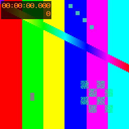

三视角视频评测
对同一次机器人操作的头部、左夹爪和右夹爪视频，逐帧比较画质压缩前后的差异。
评测样例


画面展示同一视角的第 1 帧。右侧分数汇总该视角全部 8 对帧。
MS-SSIM
样例实测头部 · 逐帧均值
1.000000- 中位数
- 1.000000
- 第 95 百分位
- 1.000000
三视角等权平均0.987899
此公开页面展示评测服务已计算的样例。运行自己的视频任务时，由计算服务接收六个文件。查看提交接口 →
指标目录
展开指标，查看衡量对象、输入要求和接口标识。
计算服务接口
以下路径相对于运行中的计算服务。GitHub Pages 仅提供静态展示。
GET/api/metrics获取指标目录
返回
metrics 数组，每项包含指标标识、说明、输入要求和可计算状态。GET/api/metrics/{metric_id}读取单项定义
用目录中的标识替换
{metric_id}。例如，查询 /api/metrics/caia_loss 可以读取 CAIA-Loss 的定义和所需材料。POST/api/jobs提交三组视频
使用 multipart/form-data，按下列字段提交六个 MP4 或 MOV 文件。默认计算 MS-SSIM。每对视频的帧数、分辨率、显示旋转角及相对时间戳须匹配，画面短边至少 161 像素。
| 视角 | 原片字段 | 压缩片字段 |
|---|---|---|
| 头部 | head_clean | head_comp |
| 左夹爪 | left_wrist_clean | left_wrist_comp |
| 右夹爪 | right_wrist_clean | right_wrist_comp |
服务受理后返回 202、任务 id 和初始状态 queued。
POST/api/metrics/{metric_id}/jobs按指标提交
指定
ms_ssim 时使用相同的六个文件字段。向预留指标提交任务，服务返回 501。GET/api/jobs/{job_id}查询状态与结果
使用提交时返回的任务标识查询。状态依次为
queued、running，成功后变为 completed。result.views 给出各视角的帧数、均值、中位数及第 95 百分位，result.mean 是各视角均值的算术平均。任务失败时读取 failed 状态下的 error。